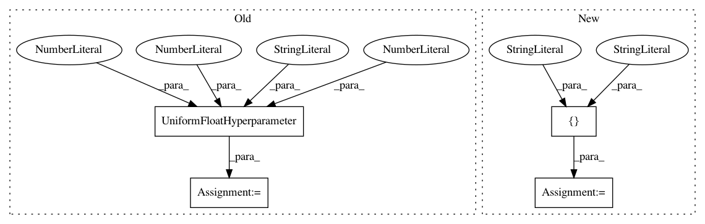

83f8551487ec8e64f6110cc1ec24142fc2c42149,examples/rf.py,,,#,63
Before Change
frac_points_per_tree = UniformFloatHyperparameter("frac_points_per_tree", 0.001, 1, default=1)
cs.add_hyperparameter(frac_points_per_tree)
ratio_features = UniformFloatHyperparameter("ratio_features", 0.001, 1, default=1)
cs.add_hyperparameter(ratio_features)
min_samples_to_split = UniformIntegerHyperparameter("min_samples_to_split", 2, 20, default=2)
cs.add_hyperparameter(min_samples_to_split)
After Change
num_trees = UniformIntegerHyperparameter("num_trees", 10, 50, default=10)
cs.add_hyperparameter(num_trees)
criterion = CategoricalHyperparameter("criterion", ["mse","mae"], default="mse")
cs.add_hyperparameter(criterion)
max_depth = UniformIntegerHyperparameter("max_depth", 20, 30, default=20)
cs.add_hyperparameter(max_depth)
In pattern: SUPERPATTERN
Frequency: 3
Non-data size: 4
Instances
Project Name: automl/SMAC3
Commit Name: 83f8551487ec8e64f6110cc1ec24142fc2c42149
Time: 2017-03-17
Author: joshua.marben@neptun.uni-freiburg.de
File Name: examples/rf.py
Class Name:
Method Name:
Project Name: automl/auto-sklearn
Commit Name: 84ac1e439158fed286a8b6ef8de3ae8826575f85
Time: 2019-08-05
Author: guilherme.miotto@gmail.com
File Name: autosklearn/pipeline/components/regression/gradient_boosting.py
Class Name: GradientBoosting
Method Name: get_hyperparameter_search_space
Project Name: automl/auto-sklearn
Commit Name: 84ac1e439158fed286a8b6ef8de3ae8826575f85
Time: 2019-08-05
Author: guilherme.miotto@gmail.com
File Name: autosklearn/pipeline/components/classification/gradient_boosting.py
Class Name: GradientBoostingClassifier
Method Name: get_hyperparameter_search_space